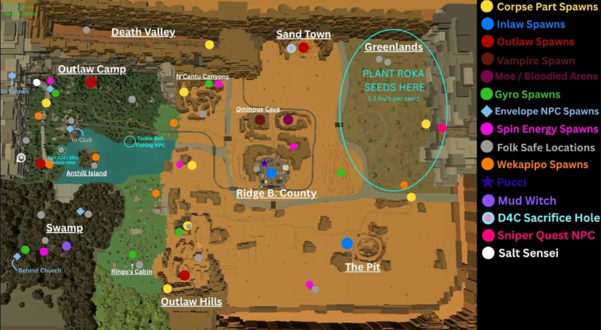

Esta wiki é dedicada ao jogo Bridger: Western, do Roblox. Aqui, você pode explorar o universo do jogo e encontrar informações sobre Stands, Especialidades, o Cadáver Santo, mapas e muito mais.
Atenção, forasteiro! Como esta é uma wiki administrada pela comunidade, algumas informações podem estar incorretas ou incompletas. Sinta-se à vontade para contribuir, corrigir erros e ajudar a manter o conhecimento desta terra atualizado.
